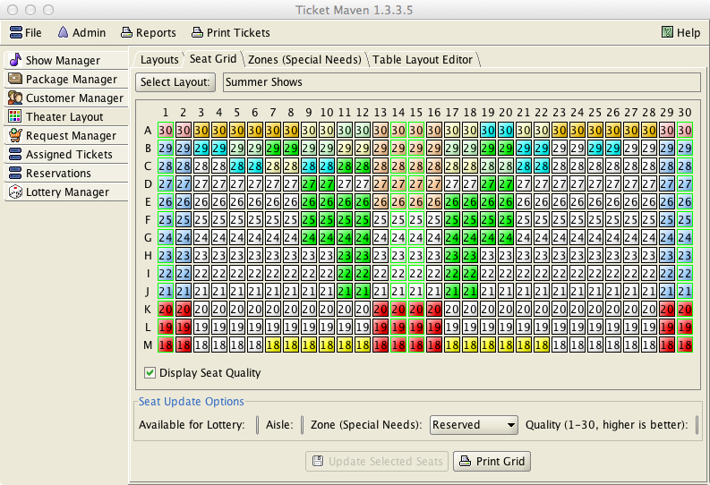
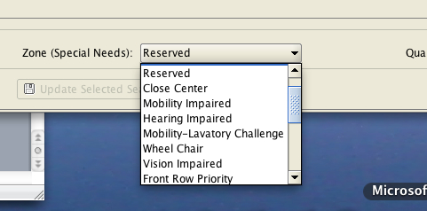

Special Needs
Special Needs are identified for a customer to indicate that a particular customer requires special seating based on a documented special need. Each customer can be assigned to zero or one special needs category via the Customer Manager tab.
Customers with a special need of any type are assigned tickets before customers without a special need.
TicketMaven recognizes a number of built-in special needs types and also allows for user-defined types. The built-in special needs types are:
Front Row Only – this special needs type indicates that a customer can only sit in the front row.
Front – customers with this special needs type will be assigned seats as far towards the front of the auditorium as possible. They are seated in the front-most seats still available when their tickets are assigned and are not guaranteed to be in the front-row.
Rear – customers with this special needs type will be assigned seats as far toward the rear as possible.
Aisle – customers with this special needs type will be assigned seats adjacent to an aisle. One member of the party will be on the aisle and the others will be next to them, but not on the aisle.
The above special needs types are meant to cover a variety of special needs such as mobility, vision, hearing, leg room, etc.

In addition, custom special needs types can be created via the Zones tab of the Theater Layout (see corresponding help topic on theater layout).
A custom zone is defined when more control over the special needs seating is required above what the built-in types provide. When a custom special needs type is created, customers can be assigned to that type and seats can be identified that are acceptable for someone with that particular special need.

A customer assigned to one of these custom special needs type can ONLY be seated in a seat that matches this type. So, it is important to define enough seats of each type as needed.
As an example, if your auditorium is sufficiently wide, the built-in Front special needs type will not be useful for people with vision or hearing problems as seats to the sides of the auditorium will be too far from the stage. The solution would be to define a new special needs type (i.e. “Vision”) and mark seats in the front and center of the auditorium with this type.